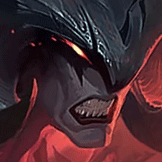
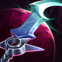
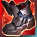
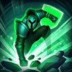
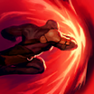
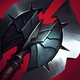

起手組件
- 紅水晶
增加前期生命，讓近戰換血與第一輪進場更穩。

校正至 7.3f · 2026-11-13。Tier與配置是本站的模式策略判斷，不是官方勝率排名。
本站獨立邏輯複核：以既有手機版技能／裝備／符文資料與已整理的7.3f官方差異推演；本輪不採用外站評級、勝率或推薦配置。
單線五人戰重視消耗、清兵、開戰或保排；側線壓力與野區入侵優勢不直接計分，回血也不能假設抵銷全部消耗。
星蝕 → 三相之力：前者提供短換血後的續戰與傷害，後者補技能接普攻的持續交換。以這條路線的輸出距離打團，死亡回補時再決定後續防護；沒有回城購物可補救每次換血。
征服者：以獨立技能與普攻累積長戰收益；短打一輪就撤退時通常無法吃滿。其餘選用巨像勇氣、回春、堅毅、即刻衝擊，依本頁輸出方式與生存需求配套。
閃現＋雪球戰車。雪球提供接近機會，命中後仍要確認隊友距離，不必每球都進。標準ARAM不套用打野重擊收益。
1 技 > 3 技 > 2 技。ARAM 開局三個基礎技能各點 1 級，之後主升 1 技、次升 3 技；大絕能點就點。
本站獨立邏輯複核：以既有手機版技能／裝備／符文資料與已整理的7.3f官方差異推演；本輪不採用外站評級、勝率或推薦配置。 完成策略與配置一致性複核，不等於全部技能逐級數值、傷害計算及所有特殊互動已實測；既有缺證項目仍保留。 標準ARAM倍率沿用既有記錄；賽勒斯倍率仍未確認。
起手組件 → 一階鞋或首件核心（依壓力調整）→ 核心成裝 → 鞋子升級 → 情境後續裝。五件成裝加一雙鞋；鞋子兩張圖表示升級前後，不是同時購買兩雙。
增加前期生命，讓近戰換血與第一輪進場更穩。

厄薩斯很容易用技能接普攻觸發，提供爆發與護盾，適合短換血後再拉開。
厄薩斯：技能後穿插普攻觸發魔法彎刀，提供技能普攻循環；不與另一件魔法彎刀成裝無理由重疊。
厄薩斯：物理技能路線的穿透與條件緩速；不再附帶舊版重創，治療壓力需要另外安排重創來源。
厄薩斯：降低物理爆發的立即壓力並獎勵參與擊殺；7.3a價格提高，不能忽略先做便宜防禦組件的時機。
後期進場失誤仍有一次復活機會，避免被五人集火直接結束團戰。
物理普攻多時優先，提高正面承傷。

厄薩斯：鍍板鋼蓋升級，針對普攻及物理傷害；不把物理護盾當作魔法傷害防護。

保留最可靠的進退與關鍵技能銜接；雪球戰車進場後仍可用閃現修正位置。
雪球命中後可等待隊友跟上再進場，讓近戰英雄在單線拉扯中擁有穩定的接戰與追擊角度。
征服者：以獨立技能與普攻累積長戰收益；短打一輪就撤退時通常無法吃滿。

硬控場敵方英雄時獲得護盾，持續 3 秒。
每 5 秒回復 5 生命。
獲得 10% 韌性。

衝刺、跳躍、瞬移、傳送或脫離潛行後，4 秒內對敵方英雄的下一次普攻或技能造成 10–65 額外真實傷害。
1 技 > 3 技 > 2 技
ARAM 開局三個基礎技能各點 1 級，之後主升 1 技、次升 3 技；大絕能點就點。
先用 1 技外圈安全換血，3 技留著修正落點；沒有大絕前不要把自己當主坦。
星蝕與三相成形後，先看敵方控制再決定是否開大。甜蜜點連續命中時才有足夠回復把團戰拖長。
以第二進場為主，等隊友先吃第一波技能。開大後盯後排但不要越過整隊；死亡之舞與守護天使讓你有更多容錯。

我方物理輸出多、敵方護甲高
可替換三相，範圍技能快速疊減甲並提升團隊物理傷害。
敵方治療與吸血很多
厄薩斯：同時提供物理穿透與重創；和多明尼克的問候、席利妲咒怨擇一，不把多件穿透裝當作預設。
敵方爆發很高
可替換守護天使或穿透裝，提高第一輪生存。
標準 ARAM 最後可追溯倍率：近期官方標準 ARAM 未列厄薩斯新的百分比修正，本站維持 100%／100%；不套用舊 Hextech／AAA ARAM 專屬數值。6.1f 有一般峽谷技能調整。 本輪核對至7.3e，未以符文大亂鬥倍率覆蓋；官方未提供本英雄完整新版倍率總表，若遊戲內不同以當局模式增益為準。
143位英雄的打法與路線條件複核；既有單卡分級與相容表保留其原有版本，不宣稱全部英雄×全部卡片重新實測或重評。
厄薩斯依靠一技能甜蜜點、三技能修正位置與大絕回復打長團；技能與身法最核心，迷霧、控場與單人強者能提高甜蜜點命中率、進場生存與第二輪技能。
外圈劍鋒能兼顧控制與回復；貼身空揮、被重創或被拉開時戰力落差大。 增幅先補本套缺少的進場、生存或輸出條件，再看上限；未取得卡面要求的觸發方式就不為它換掉核心。
7.3f：祕術拳擊每次普攻減冷卻提高到0.8秒；連鎖反應冷卻延長到25秒。隱霧反擊、流轉碎礫、移山者削弱；選擇時先看自身能否觸發，不把增幅改動套到標準ARAM。
核心
一技能三段是主要輸出來源，技能傷害與冷卻增幅能直接放大持續作戰。
核心
三技能可頻繁微位移修正甜蜜點，是身法類增幅的穩定觸發來源。
高適配
衝刺後的穿透、防禦與傷害能跟三技能反覆連動。
高適配
一技能甜蜜點擊飛與二技能拉回能觸發控制型增幅。
高適配
施放大絕無敵、保命重置與技能普攻循環都很適合厄薩斯。
適配
大絕本就提供追擊能力，額外跑速能提高甜蜜點與黏人穩定度。
技能／身法增幅多
星蝕與三相提高甜蜜點和技能後普攻，死亡之舞與守護天使支撐長團。 本路線已同步7.3c的一般裝備；增幅專屬替換另依抽卡決定。
厄薩斯很容易用技能接普攻觸發，提供爆發與護盾，適合短換血後再拉開。
厄薩斯：技能後穿插普攻觸發魔法彎刀，提供技能普攻循環；不與另一件魔法彎刀成裝無理由重疊。
厄薩斯：物理技能路線的穿透與條件緩速；不再附帶舊版重創，治療壓力需要另外安排重創來源。
厄薩斯：降低物理爆發的立即壓力並獎勵參與擊殺；7.3a價格提高，不能忽略先做便宜防禦組件的時機。
後期進場失誤仍有一次復活機會，避免被五人集火直接結束團戰。
物理普攻多時優先，提高正面承傷。
厄薩斯：鍍板鋼蓋升級，針對普攻及物理傷害；不把物理護盾當作魔法傷害防護。
需要第二進場
加入史特拉克手套，提高開大後吃第一輪傷害的容錯。
厄薩斯很容易用技能接普攻觸發，提供爆發與護盾，適合短換血後再拉開。
厄薩斯：技能後穿插普攻觸發魔法彎刀，提供技能普攻循環；不與另一件魔法彎刀成裝無理由重疊。
厄薩斯：降低物理爆發的立即壓力並獎勵參與擊殺；7.3a價格提高，不能忽略先做便宜防禦組件的時機。
敵方爆發很高
可替換守護天使或穿透裝，提高第一輪生存。
後期進場失誤仍有一次復活機會，避免被五人集火直接結束團戰。
物理普攻多時優先，提高正面承傷。
厄薩斯：鍍板鋼蓋升級，針對普攻及物理傷害；不把物理護盾當作魔法傷害防護。
分類與單卡評級是本站條件式建議。新卡完整效果未核實時不補造數值；當局抽到的卡片會改變優先順序。
本站獨立邏輯複核：以既有手機版技能／裝備／符文資料與已整理的7.3f官方差異推演；本輪不採用外站評級、勝率或推薦配置。 完成策略與配置一致性複核，不等於全部技能逐級數值、傷害計算及所有特殊互動已實測；既有缺證項目仍保留。